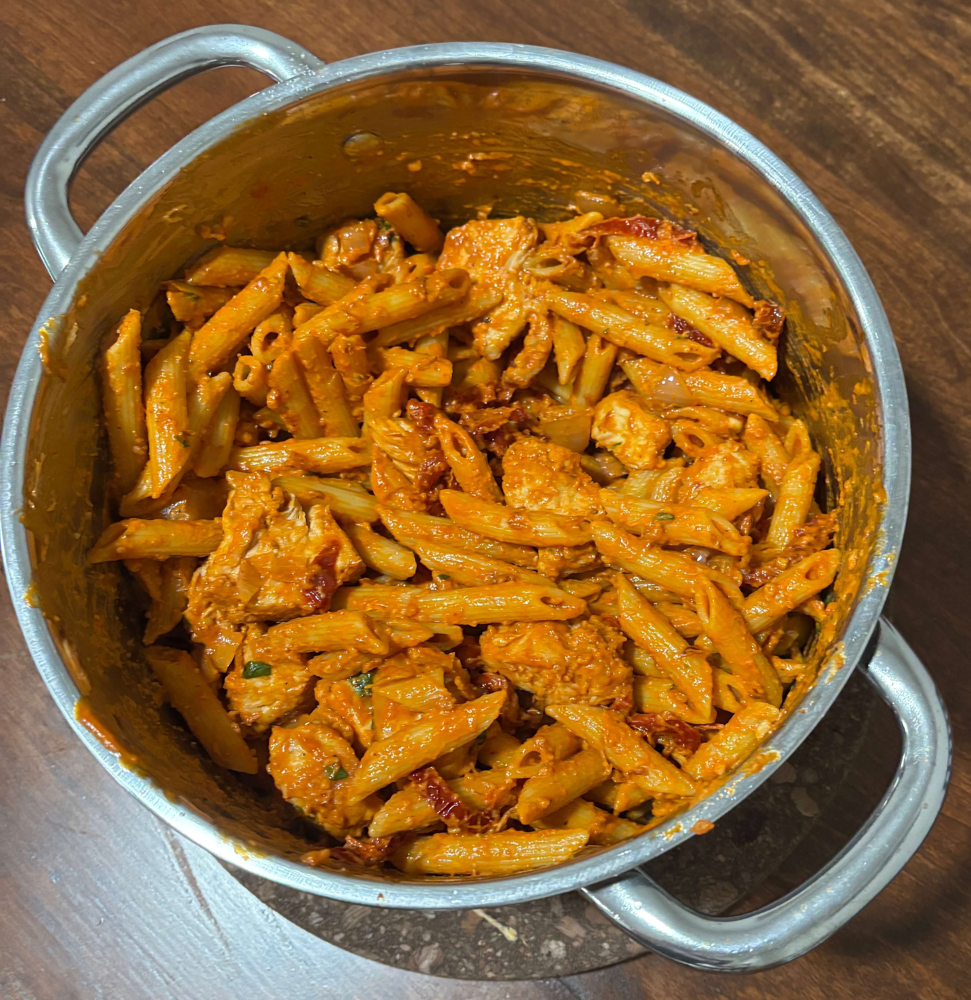

Home
Penne alla vodka

4 servings
Prep: 5 mins, Cook: 15 mins
Ingredients
- 8 ounces uncooked penne pasta
- 1 tablespoon olive oil
- 2 tablespoons butter
- 1/2 small onion chopped finely
- 1 clove garlic minced
- 1/4 cup vodka
- 1/4 cup tomato paste see note
- 3/4 cup heavy/whipping cream
- Salt & pepper to taste
- Fresh basil, sliced thin optional, to taste
- Freshly grated parmesan cheese optional, to taste
- 1lb boneless skinless chicken breast
- Flour
- 1 jar sun dried tomatoes chopped rinsed
Steps
- Boil a generously salted pot of water for the penne and cook it al dente according to package directions.
- Meanwhile chop the chicken breast and toss in a bowl of flour, salt, pepper, and oil
- Add the oil to a skillet over medium high heat and cook the chicken until browned about 5 min
- Once cooked remove the chicken from the pan with a slotted spoon and set aside
- In the same skillet add more oil if needed and add butter over medium heat. Sauté the onion for about 3 minutes or until softened (ok if it lightly browns).
- Add in the sun dried tomatoes and cook fro another 2 minutes
- Stir in the garlic and cook for about 30 seconds.
- Add the vodka and let the sauce bubble for 30 seconds or so.
- Stir in the tomato paste until you've got a smooth mixture then add back in the chicken that was set aside
- Stir in the cream, and reduce heat to medium-low. Let the sauce warm through. I find this sauce thickens up very quickly (within a couple minutes), but feel free to cook it a little longer to thicken it up even more.
- Season with salt & pepper as needed. Stir in the fresh basil if using. Toss with the drained pasta (if needed, thin the sauce out a bit with a splash of hot pasta water prior to draining it). Serve with freshly grated parmesan cheese if desired.